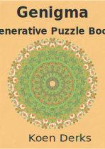

MandaRama

Welcome to this mandala coloring book! Created using the open-source programming language R, this book is completely free! And here’s the best part: if you’re craving even more mandalas, just come back tomorrow. This book refreshes itself every day, offering you 32 brand-new mandalas to enjoy.